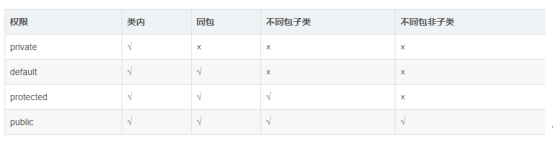

1.1 继承
1.1.1继承的好处&注意事项
继承的好处：
1、继承的出现提高了代码的复用性，提高软件开发效率。
2、继承的出现让类与类之间产生了关系，提供了多态的前提。
在类的继承中，需要注意一些问题，具体如下：
在Java中，类只支持单继承，不允许多继承，也就是说一个类只能有一个直接父类，例如下面这种情况是不合法的。
1
2
3class A{}
class B{}
class C extends A,B{} // C类不可以同时继承A类和B类
1 | class A{} |
l在Java中，多层继承是可以的，即一个类的父类可以再去继承另外的父类，例如C类继承自B类，而B类又可以去继承A类，这时，C类也可称作A类的子类。下面这种情况是允许的。
1
2
3class A{}
class B extends A{} // 类B继承类A，类B是类A的子类
class C extends B{} // 类C继承类B，类C是类B的子类，同时也是类A的子类
在Java中，子类和父类是一种相对概念，也就是说一个类是某个类父类的同时，也可以是另一个类的子类。例如上面的这种情况中，B类是A类的子类，同时又是C类的父类。
1.1.2 子类和父类的成员变量——访问
几种访问权限：

当子父类中出现了同名成员变量时，在子类中若要访问父类中的成员变量，必须使用关键字super来完成。super用来表示当前对象中包含的父类对象空间的引用。
在子类中，访问父类中的成员变量格式：
super.父类中的成员变量
1.1.3 子类和父类的成员方法——重写
成员方法特殊情况——覆盖
子类中出现与父类一模一样的方法时，会出现覆盖操作，也称为override重写、复写或者覆盖。
1
2
3
4
5
6
7
8
9
10
11
12
13
14
15class Fu
{
public void show()
{
System.out.println("Fu show");
}
}
class Zi extends Fu
{
//子类复写了父类的show方法
public void show()
{
System.out.println("Zi show");
}
}方法重写的注意事项
重写需要注意的细节问题：
- 子类方法覆盖父类方法，必须要保证权限大于等于父类权限。
1
2
3
4
5
6
7
8
9
10
11
12
13
14
15class Fu(){
void show(){}
public void method(){}
}
class Zi() extends Fu{
public void show(){} //编译运行没问题
void method(){} //编译错误
}
- 写法上稍微注意:必须一模一样:方法的返回值类型 方法名 参数列表都要一样。
总结：当一个类是另一个类中的一种时，可以通过继承，来继承属性与功能。如果父类具备的功能内容需要子类特殊定义时，进行方法重写。
重写和重载的区别
重写(Override)
重写是子类对父类的允许访问的方法的实现过程进行重新编写, 返回值和形参都不能改变。即外壳不变，核心重写！
方法的重写规则
l 参数列表必须完全与被重写方法的相同；
l 返回类型必须完全与被重写方法的返回类型相同；
l 访问权限不能比父类中被重写的方法的访问权限更低；（例如：如果父类的一个方法被声明为public，那么在子类中重写该方法就不能声明为protected）
l 父类的成员方法只能被它的子类重写；
l 声明为final的方法不能被重写；
l 声明为static的方法不能被重写，但是能够被再次声明；
l 子类和父类在同一个包中，那么子类可以重写父类所有方法，除了声明为private和final的方法；
l 子类和父类不在同一个包中，那么子类只能够重写父类的声明为public和protected的非final方法；
l 重写的方法能够抛出任何非强制异常，无论被重写的方法是否抛出异常。但是，重写的方法不能抛出新的强制性异常，或者比被重写方法声明的更广泛的强制性异常，反之则可以。
l 构造方法不能被重写；
l 如果不能继承一个方法，则不能重写这个方法。
重载(overloading)
重载是在一个类里面，方法名字相同，而参数不同。返回类型可以相同也可以不同。
每个重载的方法（或者构造函数）都必须有一个独一无二的参数类型列表。
只能重载构造函数
重载规则
l 被重载的方法必须改变参数列表(参数个数或类型或顺序不一样)；
l 被重载的方法可以改变返回类型；
l 被重载的方法可以改变访问修饰符；
l 被重载的方法可以声明新的或更广的检查异常；
l 方法能够在同一个类中或者在一个子类中被重载；
l 无法以返回值类型作为重载函数的区分标准。
1.2 抽象类
当编写一个类时，我们往往会为该类定义一些方法，这些方法是用来描述该类的功能具体实现方式，那么这些方法都有具体的方法体。
但是有的时候，某个父类只是知道子类应该包含怎么样的方法，但是无法准确知道子类如何实现这些方法。方法功能声明相同，但方法功能主体不同。那么这时也可以抽取，但只抽取方法声明，不抽取方法主体。那么此方法就是一个抽象方法。
1.2.1抽象类&抽象方法的定义**
抽象方法定义的格式：
1 | public abstract 返回值类型 方法名(参数); |
抽象类定义的格式：
1 | abstract class 类名 { |
1.2.2抽象类的特点：**
1、抽象类和抽象方法都需要被abstract修饰。抽象方法一定要定义在抽象类中。
2、抽象类不可以直接创建对象，原因：调用抽象方法没有意义。
3、只有覆盖了抽象类中所有的抽象方法后，其子类才可以创建对象。否则该子类还是一个抽象类。
之所以继承抽象类，更多的是在思想，是面对共性类型操作会更简单。
1.2.3抽象类的细节问题：**
1、抽象类一定是个父类？
是的，因为不断抽取而来的。
2、抽象类中是否可以不定义抽象方法。
是可以的，那这个抽象类的存在到底有什么意义呢？不让该类创建对象,方法可以直接让子类去使用
3、抽象关键字abstract不可以和哪些关键字共存？
- 1、private：私有的方法子类是无法继承到的，也不存在覆盖，而abstract和private一起使用修饰方法，abstract既要子类去实现这个方法，而private修饰子类根本无法得到父类这个方法。互相矛盾。
- 2、final，暂时不关注，后面学
- 3、static，暂时不关注，后面学
1.3 接口
接口是功能的集合，同样可看做是一种数据类型，是比抽象类更为抽象的”类”。接口只描述所应该具备的方法，并没有具体实现，具体的实现由接口的实现类(相当于接口的子类)来完成。这样将功能的定义与实现分离，优化了程序设计。
1.3.1类实现接口**
类与接口的关系为实现关系，即类实现接口。实现的动作类似继承，只是关键字不同，实现使用implements。
其他类(实现类)实现接口后，就相当于声明：”我应该具备这个接口中的功能”。实现类仍然需要重写方法以实现具体的功能。
格式：
1 | class 类 implements 接口 { |
l 接口中定义功能，当需要具有该功能时，可以让类实现该接口，只声明了应该具备该方法，是功能的声明。
l 在具体实现类中重写方法，实现功能，是方法的具体实现。
于是，通过以上两个动作将功能的声明与实现便分开了。
一个类可以实现多个接口，即多实现；也可以继承类的同时实现接口，即多继承。
1.3.2接口的思想**
前面学习了接口的代码体现，现在来学习接口的思想，接下里从生活中的例子进行说明。
举例：我们都知道电脑上留有很多个插口，而这些插口可以插入相应的设备，这些设备为什么能插在上面呢？主要原因是这些设备在生产的时候符合了这个插口的使用规则，否则将无法插入接口中，更无法使用。发现这个插口的出现让我们使用更多的设备。
总结：接口在开发中的它好处
1、接口的出现扩展了功能。
2、接口其实就是暴漏出来的规则。
3、接口的出现降低了耦合性，即设备与设备之间实现了解耦。
接口的出现方便后期使用和维护，一方是在使用接口（如电脑），一方在实现接口（插在插口上的设备）。例如：笔记本使用这个规则（接口），电脑外围设备实现这个规则（接口）。
1.3.3接口和抽象类的区别**
相同点:
l 都位于继承的顶端,用于被其他类实现或继承;
l 都不能直接实例化对象;
l 都包含抽象方法,其子类都必须覆写这些抽象方法;
区别:
l 抽象类为部分方法提供实现,避免子类重复实现这些方法,提高代码重用性;接口只能包含抽象方法;
l 一个类只能继承一个直接父类(可能是抽象类),却可以实现多个接口;(接口弥补了Java的单继承)
l 抽象类是这个事物中应该具备的你内容, 继承体系是一种 is..a关系
l 接口是这个事物中的额外内容,继承体系是一种 like..a关系
二者的选用:
l 优先选用接口,尽量少用抽象类;
l 需要定义子类的行为,又要为子类提供共性功能时才选用抽象类;
1.4 多态
最终多态体现为父类引用变量可以指向子类对象。
多态的前提是必须有子父类关系或者类实现接口关系，否则无法完成多态。
在使用多态后的父类引用变量调用方法时，会调用子类重写后的方法。
1.4.1多态的定义与使用格式**
多态的定义格式：就是父类的引用变量指向子类对象
1 | 父类类型 变量名 = new 子类类型(); |
l 普通类多态定义的格式
1 | 父类 变量名 = new 子类(); |
l 抽象类多态定义的格式
1 | 抽象类 变量名 = new 抽象类子类(); |
l 接口多态定义的格式
1 | 接口 变量名 = new 接口实现类(); |
l 注意事项
同一个父类的方法会被不同的子类重写。在调用方法时，调用的为各个子类重写后的方法。
1 | 如 Person p1 = new Student(); |
当变量名指向不同的子类对象时，由于每个子类重写父类方法的内容不同，所以会调用不同的方法。
1.4.2多态——成员变量和成员方法
- 多态成员变量
当子父类中出现同名的成员变量时，多态调用该变量时：
编译时期：参考的是引用型变量所属的类中是否有被调用的成员变量。没有，编译失败。运行时期：也是调用引用型变量所属的类中的成员变量。
简单记：编译和运行都参考等号的左边。编译运行看左边。
多态成员方法
编译时期：参考引用变量所属的类，如果没有类中没有调用的方法，编译失败。
运行时期：参考引用变量所指的对象所属的类，并运行对象所属类中的成员方法。
简而言之：编译看左边，运行看右边。
##### 1.4.3 Instanceof 关键字
我们可以通过instanceof关键字来判断某个对象是否属于某种数据类型。如学生的对象属于学生类，学生的对象也属于人类。
使用格式：
1 | boolean b = 对象 instanceof 数据类型; |
如
1 | Person p1 = new Student(); // 前提条件，学生类已经继承了人类 |
##### 1.4.4多态-转型*
多态的转型分为向上转型与向下转型两种：
l 向上转型：当有子类对象赋值给一个父类引用时，便是向上转型，多态本身就是向上转型的过程。
使用格式：
1 | 父类类型 变量名 = new 子类类型(); |
l 向下转型：一个已经向上转型的子类对象可以使用强制类型转换的格式，将父类引用转为子类引用，这个过程是向下转型。如果是直接创建父类对象，是无法向下转型的！
使用格式：
1 | 子类类型 变量名 = (子类类型) 父类类型的变量; |
1.5 面向对象的三大特征
总结下面向对象的三大特征封装、继承、多态的作用：
l 封装：把对象的属性与方法的实现细节隐藏，仅对外提供一些公共的访问方式
l 继承：子类会自动拥有父类所有可继承的属性和方法。
l 多态：配合继承与方法重写提高了代码的复用性与扩展性；如果没有方法重写，则多态同样没有意义。